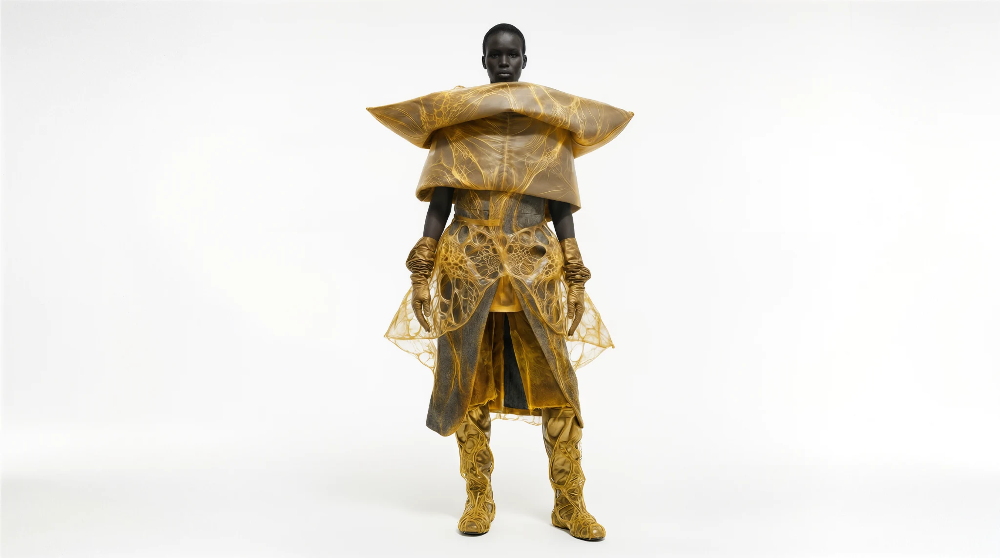
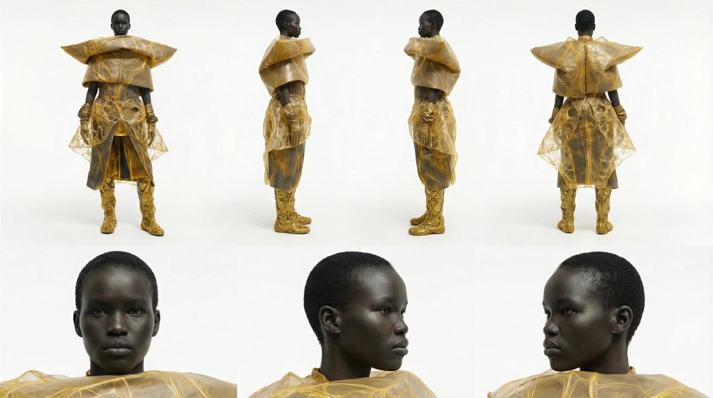

Translucent cellular membranes shaped into sculptural garments. An exploration of golden organic networks, suspended structures and the space between the body and its second skin.

01 / Front silhouettePlanktonium / Material Study

02 / Silhouette and identity sheetFront / Side / Back / Portrait